The Edhi Foundation is a non-profit social welfare organization based in Pakistan. It was founded by Abdul
Sattar Edhi in 1951, who served as the head of the organization until his death on 8 July 2016. Bilquis
Edhi, a nurse by profession, oversees the maternity and adoption services of the foundation
Location:KarachiPakistan Founder:Abdul
Sattar Edhi
Goonj
Goonj is a non-governmental organisation headquartered in New Delhi, India which undertakes disaster relief,
humanitarian aid and community development in parts of 23 states across India. Goonj focuses on clothing as
a basic but unaddressed need. It was founded in 1999 by Anshu Gupta.
Location:New Delhi, India Founder:Anshu
Gupta
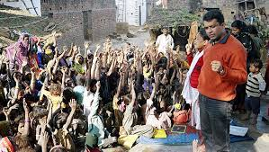
Rural Development Foundation
Rural Development Foundation (RDF) of Pakistan mission is to act as a facilitator in order to make the people
aware of their potentials as a force to undertake their development according to their own aspiration and
priorities. The approach is “Village-Based People Centered Action Oriented Sustainable Agriculture & Rural
Development.
Location:Islamabad, Pakistan Founder:Dr. M. Sadiq Malik
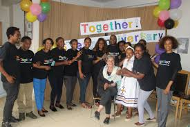
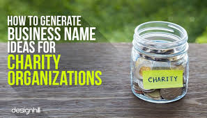
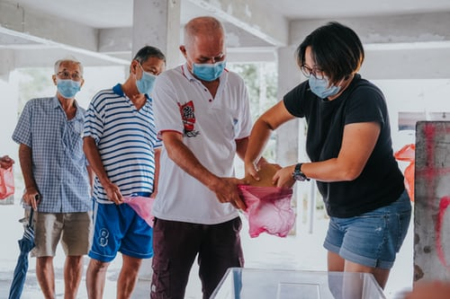
Transparent Hands
Transparent Hands is the largest technology platform for crowdfunding in the healthcare sector of Pakistan.
... It also sets up free medical camps in the rural areas of Pakistan in which, free consultation, free
medicines, and free diagnostic tests facility is provided to the deserving patients.
Location: 605A, Block C Faisal Town, Lahore, Punjab 54700, Pakistan Founder:lecturer Rameeza Moin
Wikimedia Foundation
The Wikimedia Foundation, Inc. is an American non-profit and charitable organization headquartered in San
Francisco, California.
Location: San FranciscoCaliforniaUnited
States Founder:Jimmy Wales
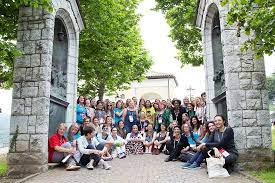
Partners in Health
By establishing long-term relationships with sister organizations based in settings of poverty, Partners In
Health strives to achieve two overarching goals: to bring the benefits of modern medical science to those
most in need of them and to serve as an antidote to despair.
Location:Haiti Founder:Paul Farmer, Ophelia Dahl
CARE International
CARE is a major international humanitarian agency delivering emergency relief and long-term international
development projects. Founded in 1945, CARE is nonsectarian, impartial, and non-governmental. It is one of
the largest and oldest humanitarian aid organizations focused on fighting global povertyr.
Location:Geneva,
Switzerland Founder:Arthur Cuming RinglandWallace
Campbell
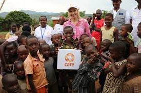
BRAC
BRAC is an international development organisation based in Bangladesh. In order to receive foreign donations,
BRAC was subsequently registered under the NGO Affairs Bureau of the Government of Bangladesh.
Location:Bangladesh Founder:Sir
Fazle Hasan Abed
Shaukat Khanam Cancer Hospital
Cancer patients at Shaukat Khanum Cancer Hospital waiting for free cancer care. Donate to fight cancer. Bring
back smiles. Save precious lives. Save dreams. Amenities: Donate today to SKMCH&RC, Online Donation Box,
Donate with credit card.
Location:Lahore, Karachi, Pakistan Founder:Mr.
Imran Khan
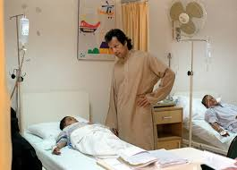
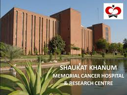
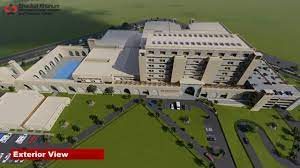
Shahid Afridi Foundation
Shahid Afridi Foundation (SAF) is a non-Profit organization formed with an aim to improve the conditions of
the most destitute communities of our society; working diligently to create impact and change lives by
focusing on initiatives relating to Health, Education, Access to Water, Sports Rehabilitation and Emergency.
Location:Pakistan Founder:Shahid
Afridi
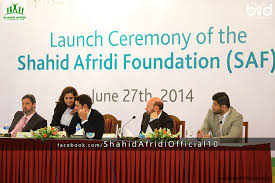
Charity ... is kind, it is not easily provok’d, it thinks no evil, it believes all things, hopes
all
things. (Sir Walter Scott)

 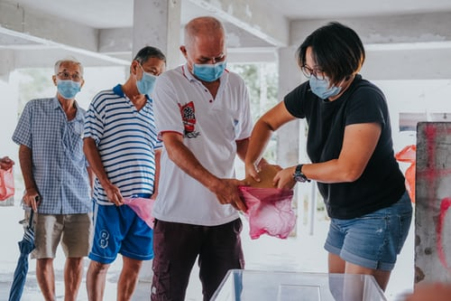
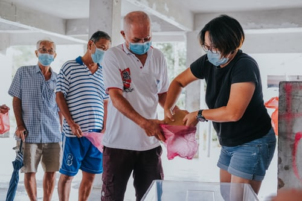